Info
Pac-Man Level Generator
A level generator for the arcade classic Pac-Man! With this project I wanted to challenge myself by exploring the Wave Function Collapse algorithm. I also tried to hone my skills in time complexity and make a efficient algorithm.
Introduction
I while back I had this idea of combining Pac-Man with a roguelike setup. This means that you must generate the levels somehow. I thought about it a lot and I couldn't come up with an easy solution. So naturally this excited me, and I started researching the topic.
I found some other level generators for Pac-Man, particularly Shaun LeBron's generator was of great inspiration. Although the generator was very sophisticated it felt a bit… boring.
The generated levels felt too similar to the original Pac-Man level and not very exciting. LeBron outlined some constraints that they found in the original Pac-Man level and Ms. Pac-Man levels. I decided to follow some of hese constraints while ignoring others to make the levels more exciting.
Constraints I followed:
- “Paths are only 1 tile thick.”
- “Intersections are separated by at least 2 tiles.”
- “No dead-ends.”
- This was never mentioned by LeBron, but the right side has to be a mirror of the left side.
Constraints I deliberately ignored:
- “Level is 28x31 tiles.” I wanted to have various sizes of the levels to create more variation (like a roguelike should).
- “There are 1 or 2 tunnels.” Although fun, I don't believe tunnels are necessary to capture the essence of Pac-Man.
- “Only I, L, T, or + wall shapes are allowed, including the occasional rectangular wall.” I think this is a bit restrictive, and we can create more exciting levels by ignoring this constraint!
- “Any non-rectangular wall pieces must only be 2 tiles thick.” We ignore this for the same reason as above! Instead, we will change it so that walls have to be at least 2 tiles thick for the sprites to work correctly.
Having outlined a plan, we can now take a crack at the problem!
TileGroups and TileShapes
Originally, I fiddled around with loops and random walks to try and create the level. This proved to be unsuccessful. My algorithm would spit out levels that did not follow the constraints too well, it was hard to write them out in this way. I thought that there must be another way.

After staring at the original Pac-Man level for an unhealthy amount of time I started to notice a pattern. I decided to call it a TileGroup, a group of 3x3 tiles. The original Pac-Man level followed this pattern followed this pattern closely, only occasionally breaking from it. I thought it would do the trick! There is a finite amount of allowed shapes a group can take on.
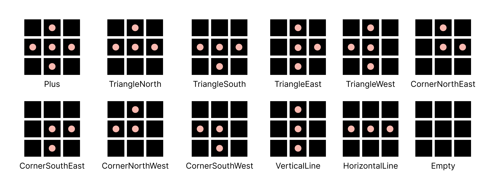If we put two of these groups next to each other there will always be two tiles between intersections! This became the base of how the levels were going to be cobbled together. The TileGridGenerator Script does the cobbling and it is quite large, let's step through what it actually does!
Wave Function Collapse
I had heard a bit about the Wave Function Collapse algorithm and thought it would fit my needs well. Particularly I foun PVS-Studio's explanation very helpful.
We can simply create an enum with the possible shapes. Then each instance of the TileGroup class can hold a list of the shapes available. Then when we perform the Wave Function Collapse algorithm, we can remove shapes that do not fit with the neighboring tiles.
Now we need to define what shapes fit together with each other. To do this I created the static class called TileShapeRules. The class keeps track of which shapes have and don't have a connection in each direction (north, east, south, west). In the class, we have a dictionary that has a Tuple of TileGroupShape and Direction as a key and returns an array of shapes to remove from the TileGroup instance.
Now let's get to cobbling! When creating a new level, we need to translate the height and width into how many TileGroups we need to fill the space. If we want a level that is 28 tiles in width we can fit a maximum of 8 groups, 3x8 = 27 tiles. This means that we will not be able to fill the entire space, I address the solution to his the Adding missing pellets section but for now let's keep moving!
We only want to generate TileGroups for half of the grid since we will later copy over the tiles to the other side. Firs, we want to remove shapes from the TileGroups on the border of the grid. For example, we know that TileGroups on the west border need to remove all shapes that have a connection to the west side such as HorizontalLine, CornerSouthWest etc... and we get these shapes from TileShapeRules. Then per the Wave Function Collapse algorithm, we update the neighboring TileGroups.
For each direction, we compare the shapes between the updated group vs the neighboring group. Using the TileShapeRules we look at the shapes to remove for the neighboring groups given the shape of the updated group. For example, if our updated group is the shape “HorizontalLine” and we are comparing the shapes to the north TileGroup we need to remove all the shapes from that group that has a connection that goes south (Plus, CornerDownLeft, VerticalLine etc…).
We must look at all the available shapes for the updated group. Then we will only remove the shapes for the neighboring group if that particular shape doesn't have a connection to any of the available shapes in that direction. Otherwise, we would be assuming that the updated group has a definite shape when it does not.
After removing shapes from the TileGroups on the border and updating their neighbors we will start to go through all the TileGroups randomly, set their definite shape to a random shape of those available, and update their neighboring groups until we have set a shape for each TileGroup. Now we got the base for our level!
Creating the TileGrid
Now that we have set a definite shape for each TileGroup we can create the full TileGrid. TileShapeRules has a definition of every shape inthe form of a bool array, true represents a pellet tile and false represents a wall tile. For example, the empty shape will have an array full of falses. Using the definition for all the different TileGroups we create instances of the Tile class and transform their states according to the TileShapeRules.
Of course, this will only work for half of the grid. We copy each Tile's state from the left side over to the right side. The grid is now perfectly mirrored!
Ghost Box
Now we need to place the Ghost Box. Originally, I had planned to use an iterative method to place the Ghost Box, but then I realized that the Ghost Box would look the same no matter what. So I made the Ghost Box Class where each coordinate has a definition for what type of tile should be there. Then we set a start coordinate and iterate through all the coordinates needed and change the tiles to the defined tile in the Ghost Box definition.
Around the Ghost Box there is an empty path. I wanted the pellet path leading into this path to feel natural. In the Ghost Box definition, I added a two-tile thick border of wall tiles. Then I check for spots where I should remove the wall tiles. The way I do this is by checking in each direction if there is a line of two pellets in that same direction outside of the border. If there is, we will remove the wall separating the empty path and the pellet path.
Adding missing pellets
The level is not perfectly generated, several factors can contribute to a level that does not complete such as: the tile groups do not fit within the width of the level, the Wave Function Collapse algorithm might have generated illegal connections due to the order of generation, and the ghost box might have removed neede tiles. It might look something like this:
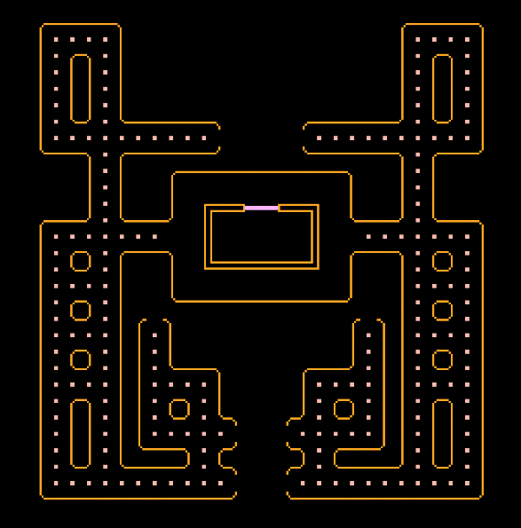To fix this we need to add pellets so there are no incomplete paths. To do this I will iterate over each tile in the grid and check its Tile Code. I determine the Tile Code by checking all the surrounding tiles. If a tile is occupied it will be represented by a 0, otherwise it will be represented by a 1. The indexes are as follows:
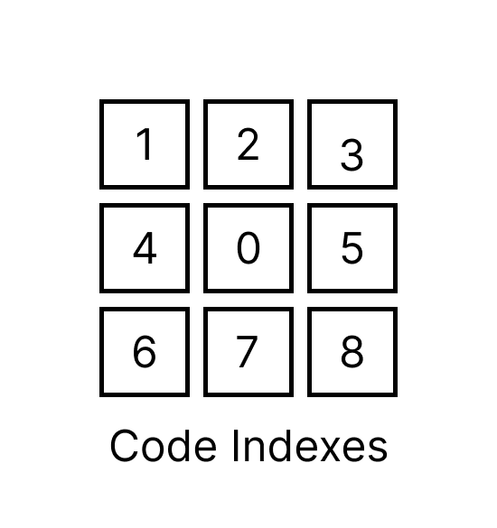Then I can look at the value and compare it to specific values represented by a const string. For example, if there is a tile with the Tile Code “111110111” it means that we should transform this tile into a pellet because it's a dead end. I check for a couple of specific cases and continue checking until there are no such cases left.
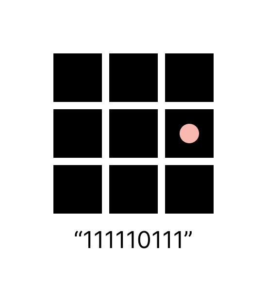Removing incorrect tiles
The Ghost Box and TileGroups not fitting in the full width might also cause another problem, walls that are only 1 tile thick. Since our tile sprites will not work with this type of pattern we have to do something else.
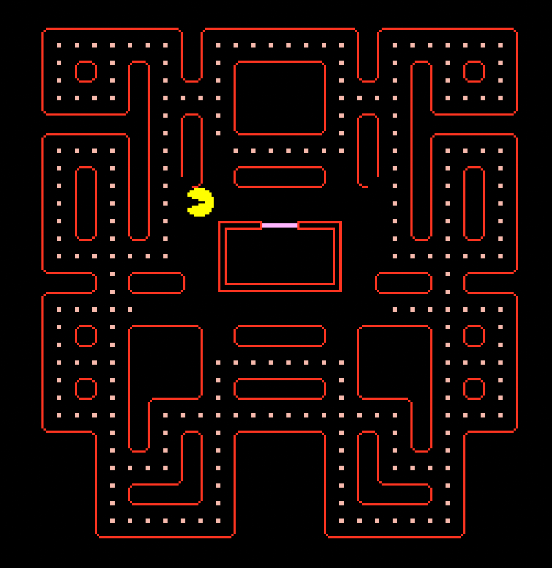We use the tile's Tile Code to determine if the tile should be set to empty instead of occupied. This breaks the constraint of having paths that are only one tile thick. I think it's fine since the tiles are empty, but ideally, I would like to fix this in the future.
Connecting paths
We now run into our next problem. Since we have a TileGroup shape that is empty we might get paths that are disconnected from each other. This is obviously an unplayable level:
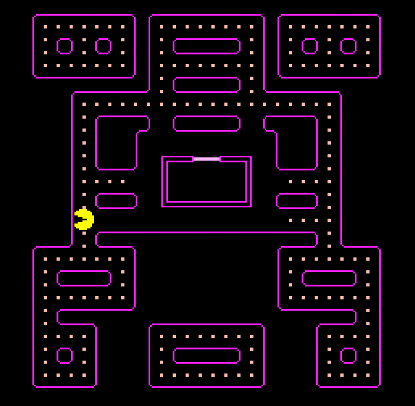So we need to connect the paths somehow. The first challenge is finding the connected path. I iterate over the coordinates until we find a coordinate that isn't occupied, this is the start of the first path. We find all the connected coordinates to that coordinate using a recursive method that adds all neighboring coordinates that are pellets or empty to the connected coordinates. I specifically use a Hashset for this because its Contains() method is an O(1) operation and we will have to compare many coordinates many times.
Now we want to continue iterating over the coordinates and try to find a coordinate that is a pellet or empty that is not connected to the previously fond coordinates. If we find a coordinate that matches this condition it means we have a disconnected path. Then we will find the coordinates for the disconnected path so we can pass them to a method and connect the two paths.
We are looking for a specific type of coordinate. The coordinate has to be on the edge of the path and it also has to be a coordinate that has once been the center of a TileGroup, which is why we make sure that we only look at the coordinates less than half of the grid. If a coordinate meets all these conditions, it means it's an eligible coordinate for a connection.
Since the paths are entirely disconnected it would be good if we could connect it in as many ways as possible. For every eligible coordinate, we will check for the closest possible connection to the previous path. If there is no connection, we will do nothing. Otherwise, we will place pellets until we have gone the entire length which means we have now connected these paths. We will also place pellets on the mirrored coordinate.
We will check for a connected path for as long as… well… the paths are disconnected from each other. We will also remove incorrect tiles after each iteration since they could create problems.
Changing occupied sprites
So now we have our final level… kinda. See I've been deceiving you, dear reader, in the previous sections. For clarity, I made sure that this method was executed. In reality this is what our level looks like right now:
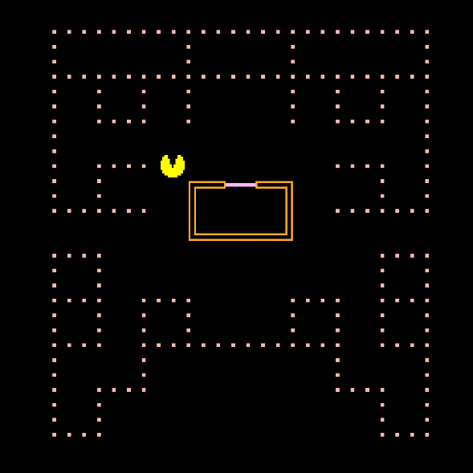Now we need to actually change the sprites into the right ones. I made the singleton class TileSpriteHolder that holds all the sprites. I also made an enum called TileSprite with a value for every kind of sprite. The class has one method called GetSprite and takes TileSprite as an argument and then returns the corresponding sprite.
I iterate over all tiles and if the tile is occupied, we will determine its Tile Code and then pass it to TryGetTileSprite() method. The method returns true if the Tile Code is a valid one and a TileSprite as an out parameter. Then we simply update the display of the tile with the new sprite.
BOOM, a level has been generated!!
Finding the border
Okay so we are not done quite yet. In the original Pac-Man the levels have a border that is thicker than the border of wall tiles inside the level.

I can't simply change the sprite based on the tile's Tile Code because wall tiles within the maze might have the same Tile Code as a border tile. So first of all we need to establish which tiles are on the border so we later can change their sprite into a border sprite.
I began by simply iterating over the grid. If we are on the border of the Tile Matrix we will go in the opposite direction and try to find the first tile that does not have the Tile Code “111111111”, which means that the tile is entirely surrounded by other occupied tiles. So to clarify, if we for example are on the west border when iterating over the coordinates, we will begin iterating over all the coordinates in that row in the east direction until we find a coordinate that has a pellet tile or empty tile as a neighboring tile. That coordinate is then added as a border coordinate.
This will almost give us all border coordinates, but we are far from done. For example, these tiles will not have been added to the border coordinates (highlighted in red):
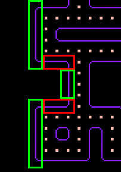For each of the found border coordinates, we will try to find additional coordinates that are part of the border using the recursive FindBorderCoordinates() method. I will try checking the coordinate in each direction and if the coordinate is within the Tile Matrix, is not in the border coordinates, is occupied and does not have the Tile Code “111111111”, we will add it as a border coordinate and call the FindBorderCoordinates() for that coordinate.
This will also help us get border coordinates that look like this (took a while to figure that one out):
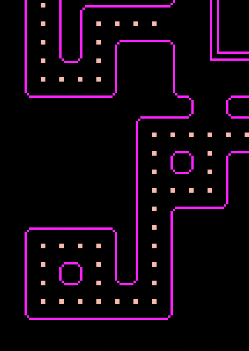But we also have to be wary of something else. Divots (highlighted in red).
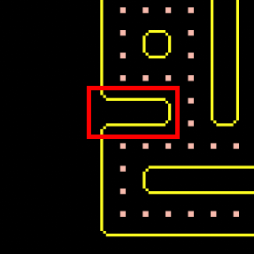We do not want to add the divots to our border. They stretch into the level and should only be one line thick. To solve this, I made a method called CheckForDivot(), depending on the Tile Code of the current coordinate I would check for divots in different directions. Basically, if any of the tiles in those particular directions had a particular Tile Code it would be divot.
Then that direction will be removed from the available directions when checking for coordinates to add to the border
When we have found all possible border coordinates all we have to do is determine the Tile Code for each the coordinate and call TryGetBorderSprite(), which works pretty much exactly the same as the TryGetTileSprite(). The only difference is we also use the CheckForDivot() method to determine what sprite we should pick depending on the divot direction. Then all we have to do is update the tile's display with the new sprite!
Voila! We have our level! (I also have a method to place power pellets but it is really not that interesting)
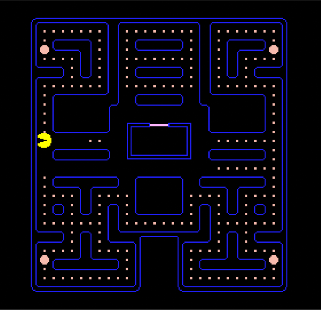I also implemented basic Pac-Man controls and slapped some PostFX on the final product.
Shortcomings
I wanted to make the maps more dynamic by being able to control their width and height. Due to the way Wave Function Collapse is implemented, levels may vary in size but it isn't controllable. Right now, the level is set to a 28x31 grid no matter what, even though the level may be smaller than that. The Ghost Box created many problems when trying to change size, making misaligned paths. I would need to iterate more on its implementation to achieve better control.
Now, I haven't implemented any ghosts, power pellets functionality and the actual game loop but, it is pretty apparent that some of the generated levels would be very VERY hard to play. Levels that have very long paths with no intersections or levels that technically don't lead to a dead end but in reality, is kind of a dead end.
I think one solution could be making the algorithm prioritizing certain TileGroup Shapes over others or somehow detecting a long path and then trying to add more pellets.
Learning outcomes
I got a much better understanding of procedural generation and the Wave Function Collapse algorithm. This has me excited to continue experimenting with it and trying to make more “designed” levels with a slew of randomness for a better experience.
I also learned more about optimization; it was very important for me that the levels could be generated quickly. I have now started to think much more critically about what data structures to choose.
I also learned to not overcomplicate when you don't have to. Sometimes you have to think about if what you are writing is too complicated for what it is you actually want to do. For example, with the Ghost Box where I tried an iterative approach and then realized that it would be much easier and readable if I just wrote out the exact definition for it.